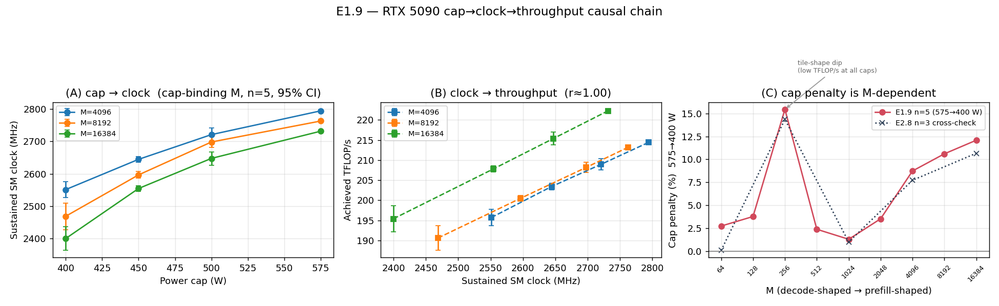
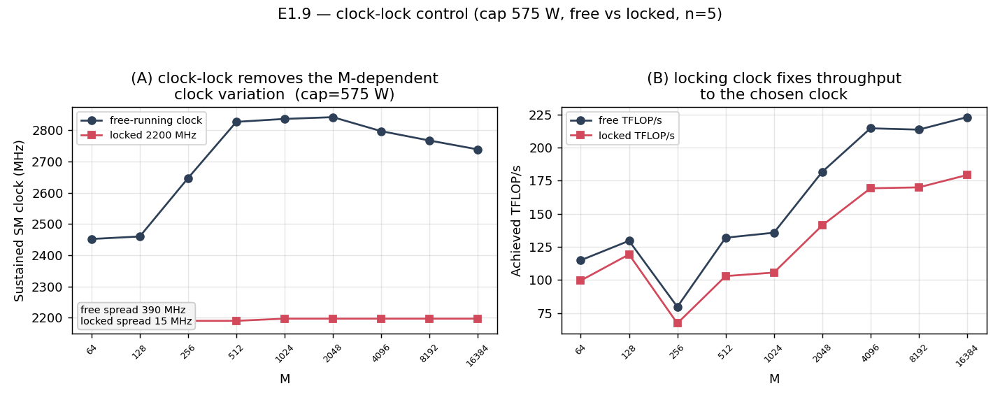
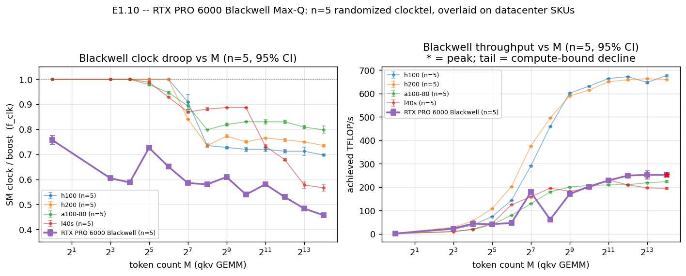
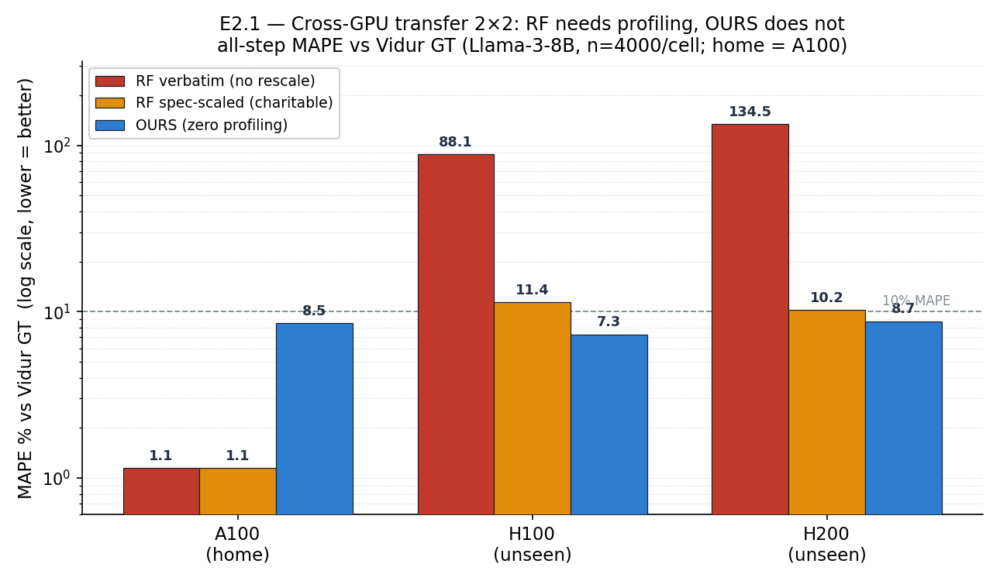
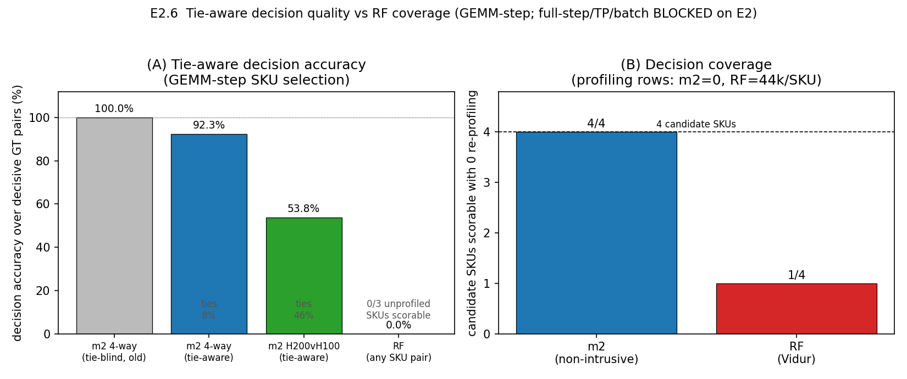

1. One-Page Snapshot
The project asks a single question: can we predict how long one inference step takes on a GPU we have never profiled, without instrumenting the engine and without training a per-device model? The answer after Round 1 is a qualified yes.
This report restates the model and its derivation, presents the five-factor compute ceiling, shows the per-SKU factor curves measured on six real GPUs, summarises Round 1 with each number traced to a results file, and closes with a submission-directions map.
2. The Model — One Step, Decomposed
A serving engine repeats one inner loop: run the projection GEMMs and attention on the GPU, then a thin layer of host-side scheduling and sampling. We model the per-step latency $t_{\text{step}}$ as GPU compute time plus a host residual:
Each GEMM's ideal time is $2 M_g K_g N_g / P_{\text{peak}}$; the achieved-efficiency $\eta_c(g)<1$ captures the shortfall. The host residual $S(N)$ grows linearly with concurrency $N$:
The host constants are calibrated once per SKU and frozen; H100's shipped floor of ~2.37 ms is within ~0.2 ms of the oracle best constant (E1.19). Every term in equation (1) is a datasheet constant or a closed-form function of the request shape — no per-device training, no engine instrumentation.
3. The Five-Factor Compute Ceiling
The hardest term is a GEMM's achieved efficiency $\eta_c$. We express the shortfall not as one fudge factor but as a product of five physically meaningful sub-factors:
3.1 Where 989 TFLOP/s comes from
The peak rate $P_{\text{peak}}$ is itself a product of countable hardware units. For the H100 SXM at BF16 dense:
The boost clock of 1.83 GHz is a load-bearing term in the peak itself. The first sub-factor $\eta_{\text{clock}}$ is the ratio of sustained clock under load to this nominal boost clock — when the GPU cannot hold 1.83 GHz, achieved FLOP/s falls in direct proportion.
3.2 The five factors, measured
Each factor is measured. Below is one representative compute-bound H100 cell (gate_up, T=4096) where achieved efficiency under real DVFS collapses from 1.0 to 0.46, attributed term by term (E1.5).
| Factor | What it captures | H100 cell | Pull-down (pp) |
|---|---|---|---|
| $\eta_{\text{clock}}$ | sustained / boost clock | 0.697 | 30.3 |
| $\eta_{\text{wave}}$ | tile / wave quantization | 0.849 | 10.6 |
| $\eta_{\text{tc}}$ | tensor-core util (HMMA %) | 0.993 | 0.4 |
| $\eta_{\text{barrier}}$ | duty / sync losses | 0.786 | 12.5 |
| $\eta_c$ | achieved, real DVFS | 0.462 | — |
The single largest contributor is the clock factor (30-point pull-down) — the empirical justification for treating $\eta_{\text{clock}}$ as a first-class term.


3.3 The memory factor is an L2-reuse law
For memory-bound work the binding factor is $\eta_{\text{mem}}$. Round 1 found a single closed-form law in one dimensionless variable — working set over L2 capacity:
One $(\eta_{\max},x_{1/2})=(0.90,\,0.477)$ pair fits three SKUs at 4.59% MAPE (E1.3c). L40S is excluded for lack of local counter CSVs (an honest gap). The law's limit: applied verbatim to engine decode kernels it misses ~42% (E1.17) — the standalone law is real, transferring it to engine kernels is not yet solved.

4. Per-SKU Factor Curves — The Clock Story
The clock factor varies most across hardware and load; Round 1 instrumented it on six real GPUs. The picture is causal: a power cap sets the sustained clock, the clock sets achieved throughput, and a large batch is what makes the cap bind.
4.1 Cap → clock → throughput is a measured causal chain
On an RTX 5090 over four caps and nine batch sizes (n=5), cap→clock is tight (r≈0.97–0.99) and clock→throughput near-deterministic (r≈0.996). A clock-lock control closes it: locking the SM clock to 2200 MHz drops throughput from 114.8 to 99.5 TFLOP/s at M=64 (E1.9).


4.2 Droop differs by SKU; Blackwell is the discriminator
Datacenter droop differs sharply by SKU: 20.2% (A100-80), 30.3% (H100), 26.5% (H200), 43.5% (L40S). Blackwell RTX PRO 6000 Max-Q is the most extreme — 54.4% droop, sustaining 1410 MHz at M=16384 vs 3090 nominal (E1.10), and uniquely shows a within-range throughput decline (2.2–4.0%): under a tight cap, achieved TFLOP/s falls as the batch grows.

5. Progress Summary — Round 1, Every Number Traced
Round 1 ran a structured program against a 22-question blueprint, split into two halves: Part 1 establishes the predictor is accurate and mechanistic; Part 2 establishes it is useful for serving decisions. Negatives are reported intact.
5.1 The decisive Part-2 win: cross-GPU transfer (E2.1)
The strongest result: on an unseen GPU, an A100-trained RF is useless transferred verbatim (88% / 135% MAPE) and recovers only with charitable spec-rescaling (11.4% H100, 10.2% H200). Our fit-free, zero-profiling predictor beats that on both: 7.3% H100 (1.56×) and 8.7% H200 (1.17×). The win is decode-driven; our prefill is honestly weaker (23–33% vs 16–18%).

5.2 The metric-divergence lesson (E1.16)
The most consequential finding is negative. predictor_v2 improved Vidur's profiled-median GT (prefill 22.8→14.8%, E1.16 remeasure) but made REAL ShareGPT wall-clock decode worse (6.8→12.9%, E1.16 ShareGPT). The two metrics diverge: Vidur GT ≠ real wall-clock, and the simpler base predictor is what is accurate on real traces. The deployable target is the wall clock.


5.3 Part-2 utility results, with caveats
Beyond cross-GPU transfer, the predictor drove four real serving decisions, each reported with its honest caveat.
| Decision | Result | Honest caveat | Source |
|---|---|---|---|
| SKU selection (4-way) | 92.3% of 78 decisive pairs | earlier 100% was a tie artifact; 7.7% unbroken ties | E2.6 |
| Power-aware scheduling | +10.5% mean makespan | replayed over measured cap-penalty curves | E2.8 |
| Sarathi chunk size | +30.7% throughput @SLO | rank corr 1.0; live vLLM, H200 | E2.9 |
| QLM live SLO estimator | MIXED | +4.2pp @40, −26pp @80; import fell back to a shim | E2.3 |


5.4 Mechanism findings that constrain the model
- Light / KV-write residual located (E1.1c): per-kernel model cuts light error 69.6→16.2%, ~81% of the prefill residual; modeled estimate ~6.6% prefill, not yet wall-clock-validated.
- Wave-quantization transfers to Ampere/Ada but not Hopper (persistent/cluster kernels); Blackwell sm120 falls back to Ampere-style CUTLASS, so Hopper's paradigm doesn't carry forward.
- Barrier constant tightened (E1.15): L40S duty/barrier corrected from 0.575 (n=4, CV 26.5%) to 0.425 (n=32, CV 1.8%).
- Online learning is adapt-only (E1.19): does NOT beat one-time calibration on a stationary trace (wins 1/3 SKUs, ~0.22pp) but wins under distribution shift.
6. Next-Steps Reflection
The most important next step follows from the metric-divergence lesson: every accuracy claim must be re-anchored to real wall-clock serving, because the two metrics disagree on which predictor is better. Four threads remain open.
A. Wall-clock re-validation
Re-validate full-step prefill and the light-kernel closing against measured wall-clock, not Vidur GT. Until then v2 is not the accurate model on real traces; the base predictor is.
B. In-flight: E1.14 + E2.10
E1.14 (clock-lock control) returned 2/4 jobs — partial, numbers withheld. E2.10 (end-to-end vLLM) is still queued. Both would convert correlational/replayed claims into live-system claims.
C. Datacenter clock-lock
The clean lock exists only on the lab RTX 5090; PACE denies SM-clock locking. A datacenter-card lock is needed to make the cap→clock→throughput chain a datacenter control.
D. Broaden the utility set
Fix the QLM heavy-load regression (−26pp @80), add serving systems beyond Sarathi/DistServe/QLM, and land the L2 law on engine kernels (close the E1.17 42% gap).
7. Submission-Directions Map
The Round-1 evidence supports three candidate papers at different maturities, carving the work along its three natural seams — measurement, predictor, utility — each with a distinct target venue.
Clock as an M-dependent power-cap step, per-SKU droop, the Blackwell within-range decline, and the cap→clock→throughput causal chain.
Remaining gaps: camera-ready + /citation-audit + /paper-extract.
The five-factor ceiling + the L2 law + mechanism-from-parameters; decode 0.9–1.8% on real traces; full-step prefill still open.
Biggest threat: metric divergence (Vidur GT ≠ wall-clock) → needs Round-2 wall-clock re-validation + a deployable tile/cluster model.
Non-intrusive capacity planning: SKU selection 92.3%/decision, the cross-GPU transfer win (E2.1), power-aware +10.5%, Sarathi +30.7%.
Remaining gaps: end-to-end vLLM (E2.10 in-flight), QLM heavy-load fix, more systems.